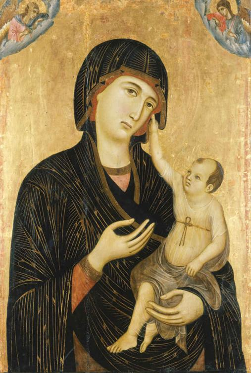

The transitions through which individuals pass during their lives may seem biologically fixed—from childhood to adulthood and eventually to death. But the stages of the human life course are social as well as biological. They are influenced by cultural differences and material circumstances in various types of societies. For example, in most contemporary wealthy western nations, death is usually thought of in relation to old age because most people enjoy a life span of 79 years or more. In traditional societies of the past, however, more people died at younger ages than survived to old age.
Childhood
In modern societies, childhood is considered a distinct stage of life between infancy and adolescence. Yet the concept of childhood has developed only over the past two or three centuries. In earlier societies, young people moved directly from a lengthy infancy into working roles within the community. The French historian Philippe Ariès (1965) has argued that childhood did not exist in medieval times. In the paintings of medieval Europe, children are portrayed as little adults, with mature faces and the same style of dress as their elders. Children took part in the same work and play activities as adults, rather than in the childhood games we now take for granted.
Duccio da Buoninsegna’s Madonna and Child, painted in the thirteenth century, depicts the infant Jesus with a mature face. Until recently, children in Western society were viewed as little adults.
Right up to the twentieth century, in the United States and most other Western countries, children were put to work at what now seems a very early age. There are countries in the world today, in fact, where young children do full-time work, sometimes in physically demanding circumstances (for example, in coal mines). According to the International Labor Organization, more than 152 million child laborers—one in every 10 children globally—are working today (U.S. Department of Labor, 2018). The ideas that children have rights and that child labor is morally repugnant are recent developments that have not yet been achieved worldwide.
Because of the long period of childhood that we recognize today, societies now are, in some respects, more child-centered than traditional ones were. But a child-centered society, it must be emphasized, is not one in which all children experience love and care from parents or other adults. The physical and sexual abuse of children and trafficking of child labor are realities, albeit statistically rare ones, of family life in present-day society. Yet the recognition of children as a social problem has come to light only relatively recently. Rates of child abuse are difficult to calculate, due to disagreement regarding definitions of child abuse and children’s fear or inability to report abuse (U.S. Department of Health and Human Services, 2016). Most experts agree that roughly 3 million reports of child abuse are made to law enforcement authorities each year; roughly 75 percent of these cases involve neglect, followed by physical abuse (17 percent), and sexual abuse (8 percent).
It is possible that as a result of changes in modern societies, childhood as a distinct stage is again diminishing. Some observers have suggested that children now grow up so fast that this is in fact the case. They point out that even small children may watch the same television programs and use the same apps as adults, thereby becoming much more familiar early on with the adult world than did preceding generations. Yet others counter that children today are coddled by their “helicopter” parents, shielded from hardships and challenges that prior generations experienced (Lemoyne and Buchanan, 2011). Critics note that practices like giving children trophies for participating in a sport, rather than excelling in a sport, spare children from some of the difficult lessons that adults must learn about competition, competence, and self-sufficiency.
The Teenager
The idea of the teenager also didn’t exist until the early twentieth century, when compulsory education and child-labor laws were enacted. Prior to that time, teenagers were not required to attend school, so adolescence was a time for working in fields and factories and for marrying and bearing children. Today, by contrast, adolescence is considered a time to learn, grow, and make choices about the kind of adult one wants to someday become.
The biological changes involved in puberty (the point at which a person becomes capable of adult sexual activity and reproduction) are universal. Yet in many cultures, these do not produce the turmoil and uncertainty often found among young people in modern societies. In cultures that foster age-grades, for example, which hold ceremonies that signal a person’s transition to adulthood, the process of psychosexual development seems easier to negotiate. Adolescents in such societies have less to “unlearn” because the pace of change is slower. There is a time in Western societies when children are required to put away their toys and break with childish pursuits. In traditional cultures, in which children already work alongside adults, this process of unlearning is much less jarring.
In Western societies, teenagers are betwixt and between: They often try to act like adults, but they are treated by law as children. They may wish to go to work, but they are required to stay in school. Teenagers in the West live in between childhood and adulthood, growing up in a society subject to continuous change.
Young Adulthood
Young adulthood, also referred to as “emerging adulthood,” is typically defined as roughly ages 20 to 30 (Arnett, 2000). This period is considered a transition between the carefree years of childhood and adolescence, and the responsibilities of marriage, parenthood, and home ownership that often accompany mid-adulthood. Part of the reason for the emergence of this distinctive life course stage is that scholars have observed a “delayed transition to adulthood” among young people in the late twentieth and early twenty-first centuries. Particularly among affluent groups, people in their early twenties take the time to travel, go to college or graduate school, try out a few different jobs, and explore sexual, political, and religious affiliations. The importance of this postponement of the responsibilities of full adulthood is likely to grow, given the extended period of education and career exploration many people now undergo.
Although it is difficult to pinpoint exactly when one makes the “transition to adulthood,” sociologist Frank Furstenberg has identified five benchmarks that are considered critical to the adulthood transition: leaving the home of one’s parents, finishing school, getting married, having a child, and being financially independent. In 1960, fully 65 percent of men and 77 percent of women had achieved all five milestones by age 30. In 2010, by contrast, only 25 percent of men and 39 percent of women had done all five by their thirtieth birthdays (Furstenberg, 2010; Kennedy and Furstenberg, 2013). These statistics clearly show that the transition to adulthood is being delayed today and that some benchmarks historically considered as signifiers of adulthood, such as becoming a parent, may be less central to one’s identity as an adult in the twenty-first century (Figure 4.1).
Although social critics (and anxious parents) wring their hands and lament that young people today “refuse to grow up,” Furstenberg offers a much more positive interpretation of these data. Young adults today have the opportunity to pursue education and “try out” many professions and romantic partners before settling on one career or one spouse. This period of exploration allows young people to figure out a life that works best for them in the long term. Young people today also have the option not to make particular transitions, without fear of stigma. For instance, young people are more likely than ever before to cohabit rather than marry, to stay single, and to remain child-free (Furstenberg, 2010). Young people themselves also adhere to a much broader view of what “adulthood” is, defining it in terms of abstract traits like self-reliance and happiness, rather than the attainment of particular milestones like homeownership (Henig, 2010).
Midlife
Most young adults in the wealthy industrialized world can expect to live well into old age. In premodern times, few could anticipate such a future with much confidence. Death through sickness or injury was much more frequent among all age groups than it is today, and women faced a high rate of mortality in childbirth. Given these advances in life expectancy, a “new” life course stage has been recognized in the twentieth century: midlife, or middle age (Cohen, 2012).
Midlife, the stage between young adulthood and old age, is generally believed to fall between the ages of 45 and 65. However, midlife is distinct from other life course stages in that there is not an “official” or legal age of entry. For example, American youth become legal adults at age 18, whereas age 65 is generally believed to signify the transition to old age and the receipt of retirement benefits. One’s entry to midlife, by contrast, tends to be signified by the social roles one adopts (or relinquishes). While some scholars believe that menopause, or the loss of reproductive potential, signals women’s transition to midlife, others believe that for both men and women, midlife is marked by transitions such as the “empty nest” stage (when children leave the family home).
Midlife is also a psychological turning point where men and women may assess their past choices and accomplishments and make new choices that prepare them for the second half of life. Keeping a forward-looking outlook in middle age has taken on a particular importance in modern societies. Most people do not expect to be doing the same thing their whole lives, as was the case for the majority in traditional cultures. For example, midlife persons today are more likely than ever to divorce, a phenomenon that has been called “gray divorce.” One of the reasons why people in their 50s and 60s are ending their marriages is that they recognize that they have many years of life ahead and are choosing to leave behind unsatisfying marriages and instead opting for singlehood or new romantic partnerships (Brown and Lin, 2012).
Later Life
Old age has been reinvented in recent decades, as older adults comprise an increasingly large share of the population both in the United States and worldwide. In 1900, just 4 percent of the U.S. population was age 65 or older. By 2018, that proportion exceeded 15 percent. The older population is projected to double by 2060, at which point nearly one in four Americans will be an older adult (U.S. Administration on Aging, 2016). The same trend is found in all industrially advanced countries. Alongside these population shifts, the social roles of older adults have shifted as well.
In traditional societies, older people were accorded great respect. Among cultures that included age-grades, the elders usually had a major—often the final—say in matters of importance to the community. Within families, the authority of both men and women increased with age. In industrialized societies, by contrast, older people tend to lack authority within both the family and the social community.
Transition to the age-grade of elder in a traditional culture often marked the pinnacle of an individual’s status. In modern societies, retirement brings the opposite. No longer living with their children and often having retired from paid work, older people may find it difficult to make the final period of their life rewarding. People used to think that those who successfully coped with old age relied on their inner resources, becoming less interested in the material rewards of social life. Although this assumption may be true, it seems likely that in a society in which many are physically healthy in old age, an outward-looking view will become more prevalent. With advances in medical technologies, older adults are living and staying healthier longer than ever before. These extensions in life span have been accompanied by expanded opportunities for lifelong learning, with many older adults learning new skills and pursuing new leisure activities. Those in retirement might find renewal in the “third age,” in which a new phase of education begins. (See also the discussion of lifelong learning in Chapter 12.)
CONCEPT CHECKS
What is social reproduction? What are some specific ways that the four main agents of socialization contribute to social reproduction?
Compare and contrast social roles and social identities.
What are the five stages of the life course, and what are some of the defining features of each stage?
Describe how the life course stage of childhood has changed since medieval times.
How is midlife different from the life course stages of childhood and old age?
Socialization through the Life Course
The transitions through which individuals pass during their lives may seem biologically fixed—from childhood to adulthood and eventually to death. But the stages of the human life course are social as well as biological. They are influenced by cultural differences and material circumstances in various types of societies. For example, in most contemporary wealthy western nations, death is usually thought of in relation to old age because most people enjoy a life span of 79 years or more. In traditional societies of the past, however, more people died at younger ages than survived to old age.
Childhood
In modern societies, childhood is considered a distinct stage of life between infancy and adolescence. Yet the concept of childhood has developed only over the past two or three centuries. In earlier societies, young people moved directly from a lengthy infancy into working roles within the community. The French historian Philippe Ariès (1965) has argued that childhood did not exist in medieval times. In the paintings of medieval Europe, children are portrayed as little adults, with mature faces and the same style of dress as their elders. Children took part in the same work and play activities as adults, rather than in the childhood games we now take for granted.
Right up to the twentieth century, in the United States and most other Western countries, children were put to work at what now seems a very early age. There are countries in the world today, in fact, where young children do full-time work, sometimes in physically demanding circumstances (for example, in coal mines). According to the International Labor Organization, more than 152 million child laborers—one in every 10 children globally—are working today (U.S. Department of Labor, 2018). The ideas that children have rights and that child labor is morally repugnant are recent developments that have not yet been achieved worldwide.
Because of the long period of childhood that we recognize today, societies now are, in some respects, more child-centered than traditional ones were. But a child-centered society, it must be emphasized, is not one in which all children experience love and care from parents or other adults. The physical and sexual abuse of children and trafficking of child labor are realities, albeit statistically rare ones, of family life in present-day society. Yet the recognition of children as a social problem has come to light only relatively recently. Rates of child abuse are difficult to calculate, due to disagreement regarding definitions of child abuse and children’s fear or inability to report abuse (U.S. Department of Health and Human Services, 2016). Most experts agree that roughly 3 million reports of child abuse are made to law enforcement authorities each year; roughly 75 percent of these cases involve neglect, followed by physical abuse (17 percent), and sexual abuse (8 percent).
It is possible that as a result of changes in modern societies, childhood as a distinct stage is again diminishing. Some observers have suggested that children now grow up so fast that this is in fact the case. They point out that even small children may watch the same television programs and use the same apps as adults, thereby becoming much more familiar early on with the adult world than did preceding generations. Yet others counter that children today are coddled by their “helicopter” parents, shielded from hardships and challenges that prior generations experienced (Lemoyne and Buchanan, 2011). Critics note that practices like giving children trophies for participating in a sport, rather than excelling in a sport, spare children from some of the difficult lessons that adults must learn about competition, competence, and self-sufficiency.
The Teenager
The idea of the teenager also didn’t exist until the early twentieth century, when compulsory education and child-labor laws were enacted. Prior to that time, teenagers were not required to attend school, so adolescence was a time for working in fields and factories and for marrying and bearing children. Today, by contrast, adolescence is considered a time to learn, grow, and make choices about the kind of adult one wants to someday become.
The biological changes involved in puberty (the point at which a person becomes capable of adult sexual activity and reproduction) are universal. Yet in many cultures, these do not produce the turmoil and uncertainty often found among young people in modern societies. In cultures that foster age-grades, for example, which hold ceremonies that signal a person’s transition to adulthood, the process of psychosexual development seems easier to negotiate. Adolescents in such societies have less to “unlearn” because the pace of change is slower. There is a time in Western societies when children are required to put away their toys and break with childish pursuits. In traditional cultures, in which children already work alongside adults, this process of unlearning is much less jarring.
In Western societies, teenagers are betwixt and between: They often try to act like adults, but they are treated by law as children. They may wish to go to work, but they are required to stay in school. Teenagers in the West live in between childhood and adulthood, growing up in a society subject to continuous change.
Young Adulthood
Young adulthood, also referred to as “emerging adulthood,” is typically defined as roughly ages 20 to 30 (Arnett, 2000). This period is considered a transition between the carefree years of childhood and adolescence, and the responsibilities of marriage, parenthood, and home ownership that often accompany mid-adulthood. Part of the reason for the emergence of this distinctive life course stage is that scholars have observed a “delayed transition to adulthood” among young people in the late twentieth and early twenty-first centuries. Particularly among affluent groups, people in their early twenties take the time to travel, go to college or graduate school, try out a few different jobs, and explore sexual, political, and religious affiliations. The importance of this postponement of the responsibilities of full adulthood is likely to grow, given the extended period of education and career exploration many people now undergo.
Figure 4.1
THIRTY-YEAR-OLDS: 1975 VS. 2015
Source: U.S. Bureau of the Census, 2016c.
Although it is difficult to pinpoint exactly when one makes the “transition to adulthood,” sociologist Frank Furstenberg has identified five benchmarks that are considered critical to the adulthood transition: leaving the home of one’s parents, finishing school, getting married, having a child, and being financially independent. In 1960, fully 65 percent of men and 77 percent of women had achieved all five milestones by age 30. In 2010, by contrast, only 25 percent of men and 39 percent of women had done all five by their thirtieth birthdays (Furstenberg, 2010; Kennedy and Furstenberg, 2013). These statistics clearly show that the transition to adulthood is being delayed today and that some benchmarks historically considered as signifiers of adulthood, such as becoming a parent, may be less central to one’s identity as an adult in the twenty-first century (Figure 4.1).
Although social critics (and anxious parents) wring their hands and lament that young people today “refuse to grow up,” Furstenberg offers a much more positive interpretation of these data. Young adults today have the opportunity to pursue education and “try out” many professions and romantic partners before settling on one career or one spouse. This period of exploration allows young people to figure out a life that works best for them in the long term. Young people today also have the option not to make particular transitions, without fear of stigma. For instance, young people are more likely than ever before to cohabit rather than marry, to stay single, and to remain child-free (Furstenberg, 2010). Young people themselves also adhere to a much broader view of what “adulthood” is, defining it in terms of abstract traits like self-reliance and happiness, rather than the attainment of particular milestones like homeownership (Henig, 2010).
Midlife
Most young adults in the wealthy industrialized world can expect to live well into old age. In premodern times, few could anticipate such a future with much confidence. Death through sickness or injury was much more frequent among all age groups than it is today, and women faced a high rate of mortality in childbirth. Given these advances in life expectancy, a “new” life course stage has been recognized in the twentieth century: midlife, or middle age (Cohen, 2012).
Midlife, the stage between young adulthood and old age, is generally believed to fall between the ages of 45 and 65. However, midlife is distinct from other life course stages in that there is not an “official” or legal age of entry. For example, American youth become legal adults at age 18, whereas age 65 is generally believed to signify the transition to old age and the receipt of retirement benefits. One’s entry to midlife, by contrast, tends to be signified by the social roles one adopts (or relinquishes). While some scholars believe that menopause, or the loss of reproductive potential, signals women’s transition to midlife, others believe that for both men and women, midlife is marked by transitions such as the “empty nest” stage (when children leave the family home).
Midlife is also a psychological turning point where men and women may assess their past choices and accomplishments and make new choices that prepare them for the second half of life. Keeping a forward-looking outlook in middle age has taken on a particular importance in modern societies. Most people do not expect to be doing the same thing their whole lives, as was the case for the majority in traditional cultures. For example, midlife persons today are more likely than ever to divorce, a phenomenon that has been called “gray divorce.” One of the reasons why people in their 50s and 60s are ending their marriages is that they recognize that they have many years of life ahead and are choosing to leave behind unsatisfying marriages and instead opting for singlehood or new romantic partnerships (Brown and Lin, 2012).
Later Life
Old age has been reinvented in recent decades, as older adults comprise an increasingly large share of the population both in the United States and worldwide. In 1900, just 4 percent of the U.S. population was age 65 or older. By 2018, that proportion exceeded 15 percent. The older population is projected to double by 2060, at which point nearly one in four Americans will be an older adult (U.S. Administration on Aging, 2016). The same trend is found in all industrially advanced countries. Alongside these population shifts, the social roles of older adults have shifted as well.
In traditional societies, older people were accorded great respect. Among cultures that included age-grades, the elders usually had a major—often the final—say in matters of importance to the community. Within families, the authority of both men and women increased with age. In industrialized societies, by contrast, older people tend to lack authority within both the family and the social community.
Transition to the age-grade of elder in a traditional culture often marked the pinnacle of an individual’s status. In modern societies, retirement brings the opposite. No longer living with their children and often having retired from paid work, older people may find it difficult to make the final period of their life rewarding. People used to think that those who successfully coped with old age relied on their inner resources, becoming less interested in the material rewards of social life. Although this assumption may be true, it seems likely that in a society in which many are physically healthy in old age, an outward-looking view will become more prevalent. With advances in medical technologies, older adults are living and staying healthier longer than ever before. These extensions in life span have been accompanied by expanded opportunities for lifelong learning, with many older adults learning new skills and pursuing new leisure activities. Those in retirement might find renewal in the “third age,” in which a new phase of education begins. (See also the discussion of lifelong learning in Chapter 12.)
CONCEPT CHECKS